Learning Objectives
After completing this lesson, you’ll be able to:
- Use a transformer to edit the features’ schema.
- Use Automatic Attribute Definition mode to automatically adopt features’ schema.
Instructions
In this lesson, you will:
- Scroll down to read the text below.
- Complete the exercise by following the steps.
- Complete the Quiz toward the bottom of the page.
- Optional: Let us know if you found this lesson relevant to your role by filling out the survey at the bottom of the page.
- Click 'Next' to mark the lesson complete.
Resources
Terminology
Feature connection lines
These lines connect feature types and transformers on the canvas and control the flow of features from left to right.
Schema Mapping
Once you have edited a writer feature type schema, you have to map the old schema onto the new schema. This step involves changing the names, data types, etc., of your attributes to ensure they match the new schema.
FME uses colored ports on expanded writer feature types to indicate the status of schema mapping.
- Green ▶: this attribute is connected.
- Yellow ▶: this reader feature type attribute is not mapped to any writer feature type; therefore, this attribute will not be in the output.
- Red ▶: this writer feature type attribute is not connected. Although it exists in the schema, it will not receive any data and therefore will not have any values in the written data.
Scenario

Now that Jennifer has created a workspace that edits the web data’s schema, she must map it, specifying how the original and new schemas are related.
1) Start FME Workbench
- Start FME Workbench (2026.1 or later).
- Open the starting workspace (C:\FMEData\Workspaces\IntegrateDataWithTheFMEPlatform\map-datas-schema.fmw).
- Notice the red triangle icons on the writer feature type attributes.
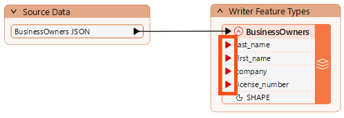
2) Add an AttributeManager
We must map the new schema onto the old one to ensure our new first_name attribute gets the same values as the existing First attribute. We can use the AttributeManager transformer for that.
- Click the black feature connection line between the reader and writer feature types to select it.
- Observe the light blue highlight indicating the line is selected.
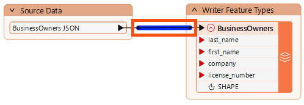
- With the feature connection line selected, type in “AttributeManager.”
- The Quick Add dialog appears, letting us search for transformers, readers, and writers.
- Find the AttributeManager and press Enter to add it.
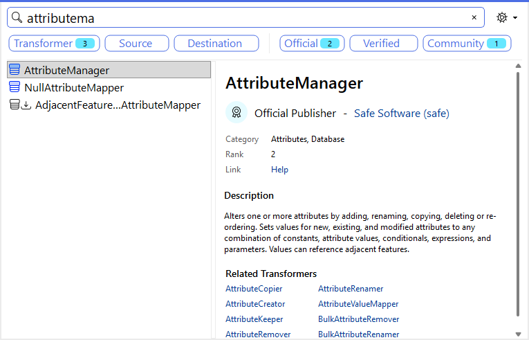
- The AttributeManager appears on the canvas.
- When any object on the canvas is selected, Quick Add automatically connects the new object.
- You may need to click-and-drag the AttributeManager to line it up between the two feature types.
- Double-click the AttributeManager to open its Parameters dialog.
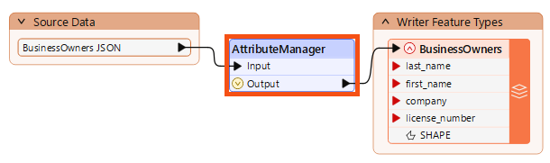
3) Map Schema with an AttributeManager
The AttributeManager parameters are a table that defines how to modify attributes. It allows you to create new attributes, edit existing attribute names, reorder them, and set their values. All transformers have parameters that control their operation. These parameters are unique to each transformer. We can use this transformer to change incoming features so their schema matches the writer feature type.
- Press Ctrl (or Cmd) + clicks the attributes you'd like to remove (_creation_instance, _response_body, _http_status_code, all the transformers beginning with json_, Latitude, and Longitude)
- Click the Remove Row button to delete them.
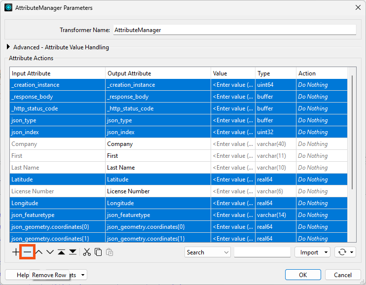
Next, we can rename our attributes.
- Click in the Output Attribute column for the First attribute and rename it “first_name.”
- Then click the drop-down arrow to choose from writer feature type attribute names or type it in manually.
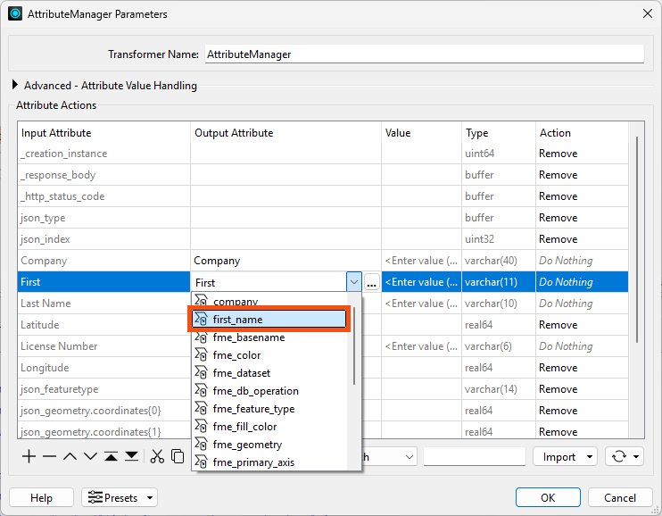
- Then, rename the other attributes to use lowercase and underscores by typing in the Output Attribute column for each attribute you need to change.
- Then, use the Move Down and Move Up buttons to change the attribute order so that it is last_name, first_name, company, and license_number:
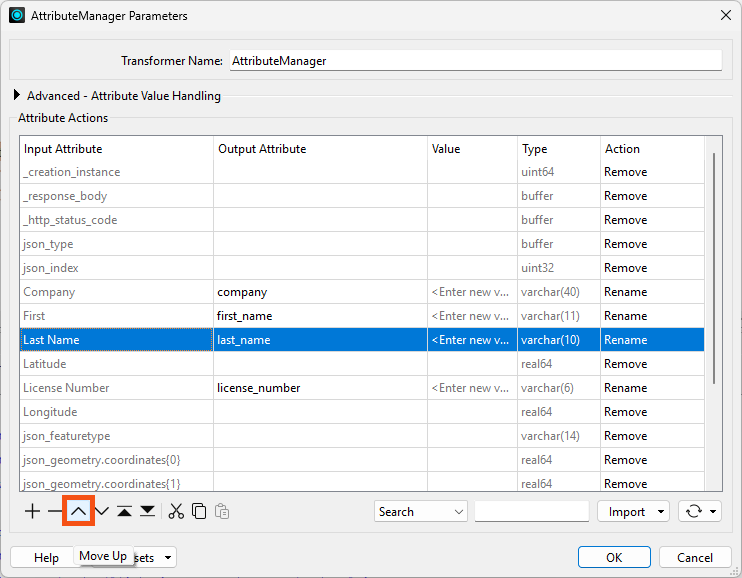
Your dialog should looks like this:
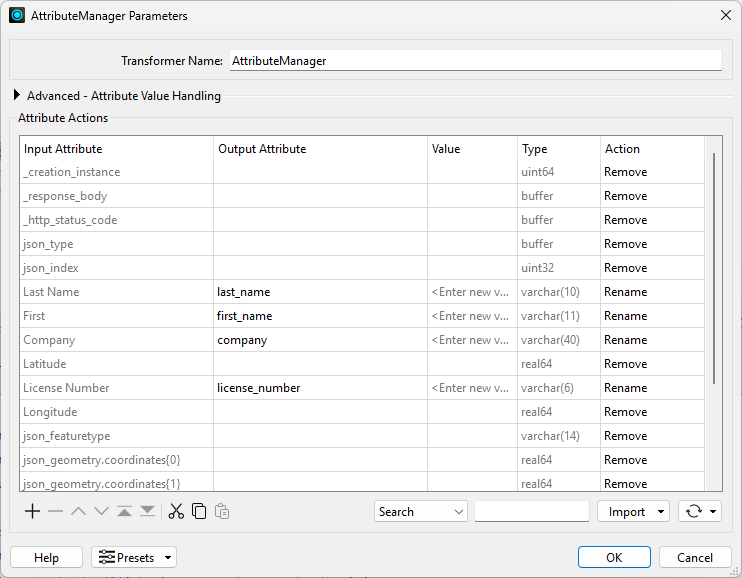
- Click OK.
- The attribute ports on the writer feature type are now green, indicating that the schema is mapped.
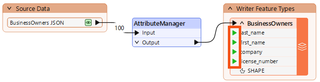
4) Automatic Attribute Definition Mode
In the previous lesson, we mentioned that we could use Automatic or Manual Attribute Definition mode on the feature type. We used Manual, defined the schema we wanted, and then mapped it using the AttributeManager.
That's a valid approach, but let's look at a faster alternative: Automatic mode.
- Double-click the BusinessOwners writer feature type to open its parameters.
- Click the User Attribute tab.
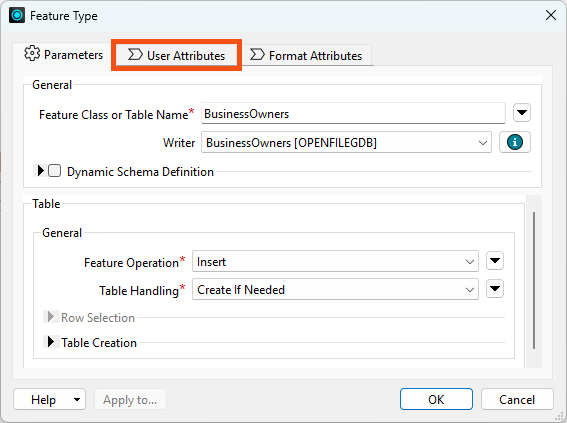
The Attribute Definition mode is currently set to Manual.
- Click Automatic, and the schema changes to match the incoming features:
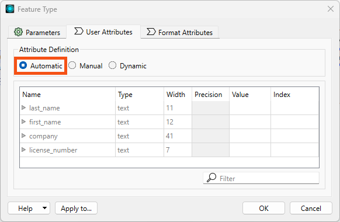
The schema is the same in this case because we already mapped it using the AttributeManager. But consider: it would have also worked to change this to Automatic and use the AttributeManager without defining the destination schema in Manual mode. The only major downside is that FME has to infer the attribute types, so you need to check them. In this case, they are all text and set correctly, so it works well.
After changing to Automatic mode, we could click Manual again to make changes.
However, we will leave it in Automatic mode.
- Click OK.
- Note that the colored arrows disappear from the feature type's attributes.
- No arrows are needed in Automatic mode, because the destination schema will always match incoming features.
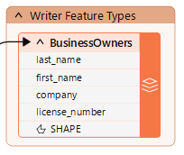
We haven't run the workspace yet; in the next lesson, we'll use a technique called partial runs to do that.
Optional Challenge
Test Automatic mode by changing your AttributeManager parameters. Rename an attribute, for example. You will see the change reflected in the writer feature type schema automatically.
Make sure to undo your change after testing.
Leave Us Feedback on This Lesson